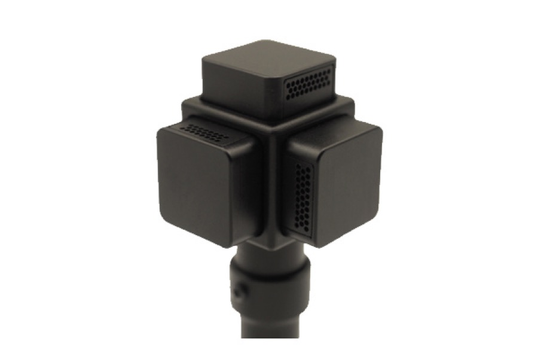
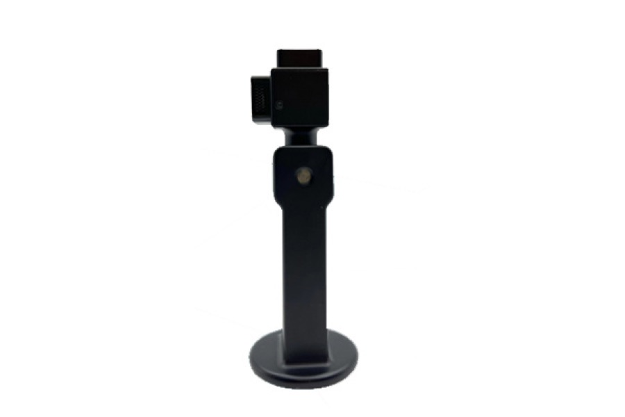
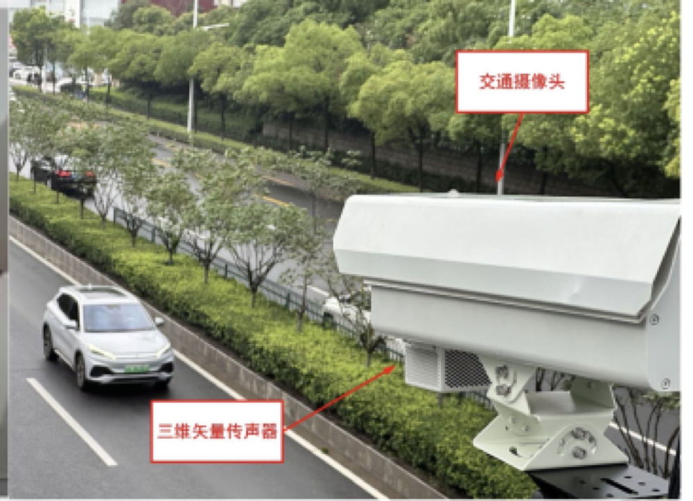

声学超构材料
设计人工微结构，调控声波传播、局域化、散射和模式耦合。
Nanjing University · Acoustic Metamaterials
南京大学
先进制造学院
人工带隙材料实验室团队
准聘助理教授/特聘研究员
围绕声学超构材料、拓扑声学、声场调控与矢量声场探测开展研究。 通过人工结构设计与精密测量方法，探索复杂声场的产生、表征和应用。
Research Atlas
以结构设计、物理机制和测量方法为主线，连接基础声学问题与智能声学应用。
设计人工微结构，调控声波传播、局域化、散射和模式耦合。
生成和调控声学涡旋、轨道角动量与时空结构化声场。
发展声压、质点振速、声能流与拓扑物理量的测量方法。
面向声源定位、声学成像、噪声识别和工程声学测试。
Selected Publications
Nature Communications
面向结构化声场的新自由度，生成任意取向轨道角动量的三维时空声学涡旋。
Physical Review Applied
面向复杂声场中的谱密度和分数拓扑荷，建立从声场图像到定量物理量的测量路径。
Nature Communications
围绕谷锁定表面声波展开，展示拓扑声学结构中边界传播和模式调控的新路径。
Physical Review Letters
把声学矢量场中的拓扑纹理从概念推进到实验观测，建立复杂声场结构的测量入口。
Nature Physics
以人工声学结构实现拓扑保护的单向声传播，奠定拓扑声学研究中的重要实验基础。
Funded Research
围绕声学功能材料、复杂声场调控和智能声学感知持续开展基础与交叉研究。
聚焦声学超构材料、声场调控与矢量声场探测中的基础科学问题。
面向新型声学功能材料和智能声场技术中的关键机制与方法。
参与功能材料、声学器件和工程声学应用相关的交叉研究任务。
支撑声学功能材料、智能感知和工程测试场景中的技术积累。
Applications
研究方法延伸到声学传感、声学成像、声源定位和工程声学测试等场景。

面向 MEMS 矢量传声器、矢量阵列和声场多物理量感知。

服务近场声全息、中低频声成像和复杂声源识别。

面向车辆声功率监测、设备噪声检测和隔声量测试等场景。
部分应用场景可参考 苏州理声科技有限公司。